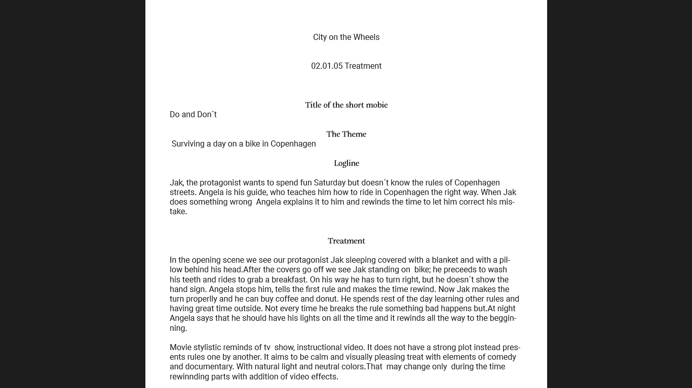

Designer vs. < Coder > . Basic Content
» Basic Web » Basic Content » Basic Animation » Basic UX02.01.02 XD Prototype
Me and my group, we were working on the project called City on the wheels. You can see here prototype for the mobile version of website, saying information about biking here, in Copenhagen. It was first big group project for us this semester, we had to learn how to work in group and how to listen to each other. We did our best to use everyone's ideas and connect them in one great project.
Go to Prototype »02.01.03 Link to Video: Story without words
Project full of laugh and funny moments. 3 girls from Slovakia did this assignment without any problems. We have gained our knowledge about filming and editing video. I am really thankful for this experience. Creating of the screenplay was totally built on the improvisation. Even though I am the main actor of this video, I really like it and I enjoyed it for 100%. There is our example of one lucky day but..... You won't believe, what happened.
Go to Video (YT) »02.01.05 Treatment
Another part of group project City on the wheels, based on the idea of biking here, in Copenhagen. Story tells about one boy, who does not know exact rules of using bike in a traffic. He has to learn it, just as everyone, to not cause any accident and then some injury to himself or to someone else.
 Go to Document »02.01.07 Storyboard
Here you can see the storyboard for the project City on the wheels. The final version of our storyboard was drawed by me. It shows you how the scenes should look like, what the actor should do, where to go, it says about the time details, the place, where it should be filmed and so on. Storyboard is some sort of help to make sure you do not forget about something while filming, you do not have to improvise and waste the time when the idea of story is finished.
Go to Storyboard »02.01.08 Documentation
The project documentation consist of more parts, for example Storyboard, moodboard, treatment, design principles and test results. We have been through all of these things during creating the website for our project City on the wheels. It is very useful to do all of those steps before having the final product, because you have time to improve some mistakes, which did not show up from the beginning.
Go to Document »02.01.09 PDF with Links to micro site (final)
Our last step in this project. The whole and finished website City on the wheels. In this document you can find links to our final version. Most of the time I was helping my group with design and things connected with it. The website shows rules of biking in Copenhagen, in Denmark, some informations about our group, it includes the video about young boy, who needs to learn how to use his bike and how to not. I have to say, that sometimes it is hard to work in a group, but in the end we created something amazing together.
Go to Document (links) »